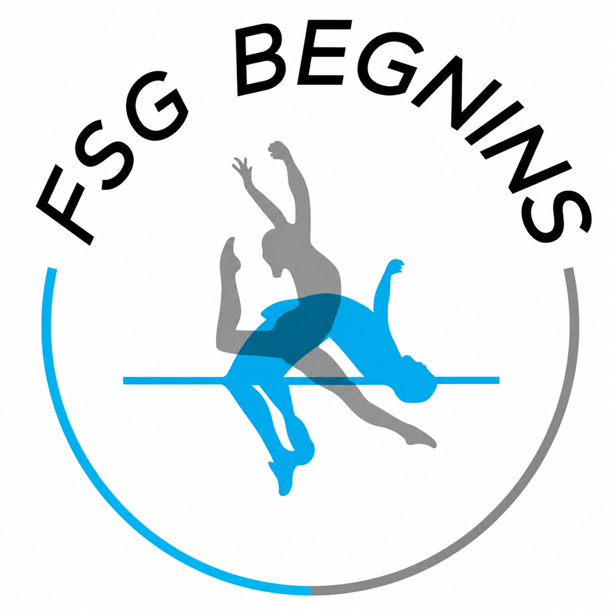

Politique de confidentialité
La présente politique de confidentialité décrit comment l'application mobile FSG Begnins collecte, utilise et protège vos données personnelles. Elle s'applique à toutes les personnes utilisant l'application (moniteurs et administrateurs de la section agrès de la Fédération de Gymnastique de Begnins, Vaud, Suisse).
Lors de votre inscription et de l'utilisation de l'application, nous collectons :
Nous ne collectons pas de données de localisation, de photos personnelles ni d'informations de paiement.
Les données collectées sont utilisées exclusivement pour :
Vos données ne sont jamais vendues, louées ni partagées avec des tiers à des fins commerciales.
Toutes les données sont stockées sur Google Firebase (Firestore, Authentication, Cloud Storage, Cloud Messaging), dont les serveurs sont opérés par Google LLC. Firebase est conforme au RGPD et au droit suisse sur la protection des données (nLPD).
Pour plus d'informations sur les pratiques de confidentialité de Firebase : firebase.google.com/support/privacy
Seuls les membres actifs validés par un administrateur peuvent accéder à l'application. Les administrateurs de la FSG Begnins ont accès à l'ensemble des données nécessaires à la gestion de la section. Aucun accès extérieur n'est autorisé.
Les données sont conservées aussi longtemps que le compte est actif. Un administrateur peut supprimer ou archiver un compte à tout moment. Les données historiques (rapports d'entraînement, résultats de concours) peuvent être conservées à des fins d'archivage interne au-delà de la désactivation du compte.
Conformément au RGPD et à la nLPD, vous disposez des droits suivants :
Pour exercer ces droits, contactez-nous à : dev@kfmn.ch
L'application peut envoyer des notifications push via Expo et Firebase Cloud Messaging. Ces notifications sont liées à l'activité de la section (absences, rappels de concours, résultats, communications des administrateurs). Vous pouvez désactiver les notifications à tout moment dans les réglages de votre appareil.
L'accès aux données est protégé par authentification Firebase et par des règles de sécurité Firestore qui limitent chaque utilisateur aux données auxquelles il a droit. Les communications entre l'application et Firebase sont chiffrées via HTTPS/TLS.
Cette politique peut être mise à jour pour refléter des évolutions de l'application. En cas de modification importante, les utilisateurs en seront informés via une notification dans l'application. La date de dernière mise à jour est indiquée en haut de ce document.
Pour toute question relative à cette politique ou à l'utilisation de vos données :
FSG Begnins — Section Agrès
Begnins, Vaud, Suisse
dev@kfmn.ch